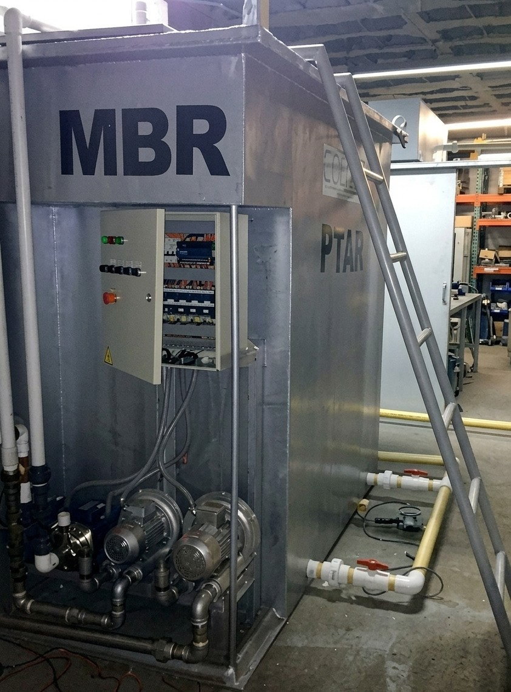
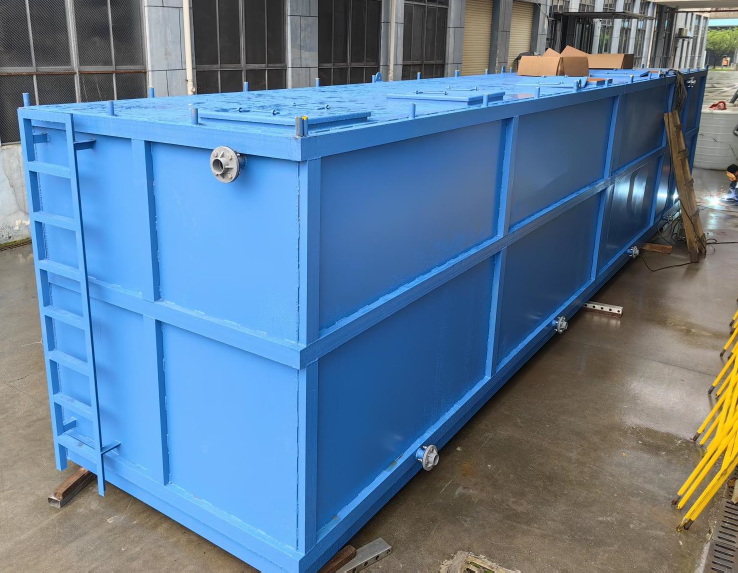

Inicio / Servicios
Plantas de tratamiento MBR
Tratamiento biológico combinado con separación por membranas para producir un efluente de baja concentración de sólidos.
Solicitar cotización por WhatsApp
Solución técnica
Un biorreactor de membranas combina degradación biológica de materia orgánica con separación física de biomasa. La membrana sustituye la clarificación secundaria y permite diseños compactos. La aireación, el flujo de permeado y la limpieza se dimensionan según el agua de entrada.
Esquema conceptual; la configuración final depende del proyecto.
Alcance técnico
- Diseño compacto
- Separación de biomasa por membranas
- Evaluación de desinfección y reúso
Consultar modelos y precios de referencia MBR

Aplicaciones
Descargas sanitarias, hoteles, parques industriales y proyectos con espacio limitado o necesidades de reúso.
Preguntas frecuentes
¿El MBR elimina las sales disueltas?
No está diseñado para desalación. Si el reúso exige reducir sales, puede requerirse nanofiltración u ósmosis inversa.
Plantas compactas MBBR + MBR
Una configuración híbrida puede combinar biomasa adherida en un reactor MBBR con separación mediante membranas MBR. Se evalúan el pretratamiento, la aireación, la retención de soportes, el flujo de permeado y las limpiezas. Consulta también nuestras membranas MBR.
¿Qué capacidad de planta MBR necesito?
Se calcula con el caudal diario, las horas de operación, los picos de descarga y la carga contaminante. La capacidad nominal no sustituye la caracterización del agua.
Información para cotizar
Caudal, DBO, DQO, sólidos, temperatura y calidad requerida.
La ingeniería, precio, plazo y condiciones comerciales se definen para cada proyecto. El desempeño y cumplimiento aplicable se establecen según la calidad del agua y el diseño acordado.
Enviar información mediante formularioExplora nuestras soluciones
- Plantas de tratamiento de aguas residuales
- Plantas de tratamiento MBR
- Plantas de tratamiento MBBR
- Membranas MBR
- Ósmosis inversa industrial
- Ultrafiltración industrial
- Operación y mantenimiento de PTAR
- Tratamiento de agua para torres de enfriamiento
- Tratamiento de agua para calderas
- Servicios de arquitectura
- Construcción y obra civil